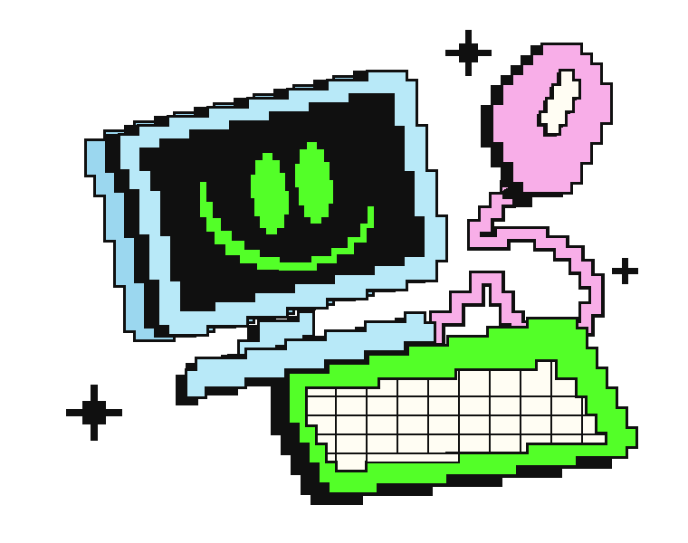

The Tireless Hand↗
One agent breaks a drone cockpit. Seven independent checks figure out what’s actually broken.
AI ENGINEER & CURIOUS HUMAN
I build AI products, LLM agents, and
the tests that keep them honest.

01 / IDEAS, OUT IN THE WORLD
From a brand-monitoring product to an agent that breaks things on purpose. A few things I’ve made, tested, and learned from.
One agent breaks a drone cockpit. Seven independent checks figure out what’s actually broken.
Brand reputation meets AI perception. Understand the signals around a brand—and what models say about it.
An agent skill that keeps the developer in charge of intent, tradeoffs, and consequential decisions.
Turn long MMA training sessions into candidate vertical highlights, with a human making the final call.
02 / BETTER, TOGETHER
Small details make software dependable. I contribute fixes, features, and regression tests to tools people use.
Clear task outcomes, reply excerpts, explicit missed days, and Windows reliability fixes.
Consistent memory naming across save paths, with 30 regression tests to keep it that way.
Use stable tool-call IDs so simultaneous timestamps can’t mix up the activity panel.
03 / THE PERSON BEHIND THE PIXELS
I like taking systems apart, finding where they fail, and building something better.
I’m an AI engineer studying at Terna Engineering College, University of Mumbai. My work sits between LLM agents, full-stack products, and evaluation.
Right now, I’m building founder-assessment infrastructure at Navayuvak Entrepreneurs and working on Vigil, my brand-reputation and AI perception product.
I care about the whole loop: the idea, the person using it, the messy edge cases, and what the evidence actually says.
My résumé, in full04 / LEARNING BY SHIPPING
Founder-assessment infrastructure, mobile-first intake, and longitudinal intelligence for young founders.
Built a reputation platform from scratch, shaped the roadmap through agency feedback, and launched a free brand checker.
Shipped a booking and CRM platform, a buying-intent classifier, and production automation for customer support and advertising.
RESEARCH / EXECUTION DIVERGENCE METRIC
A preregistered, 900-instance study of the gap between LLM explanation and execution. Because fluent answers aren’t the whole story.
SUBMITTED TO ACL ROLLING REVIEW · NOT YET ACCEPTED